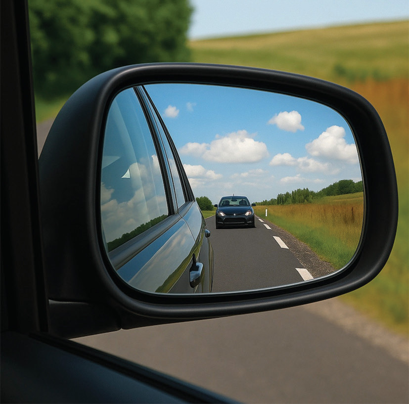
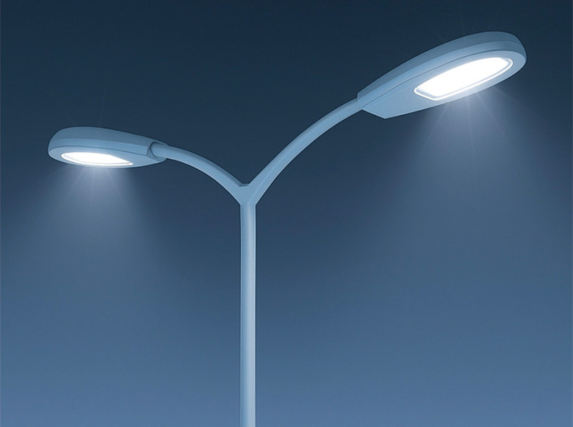
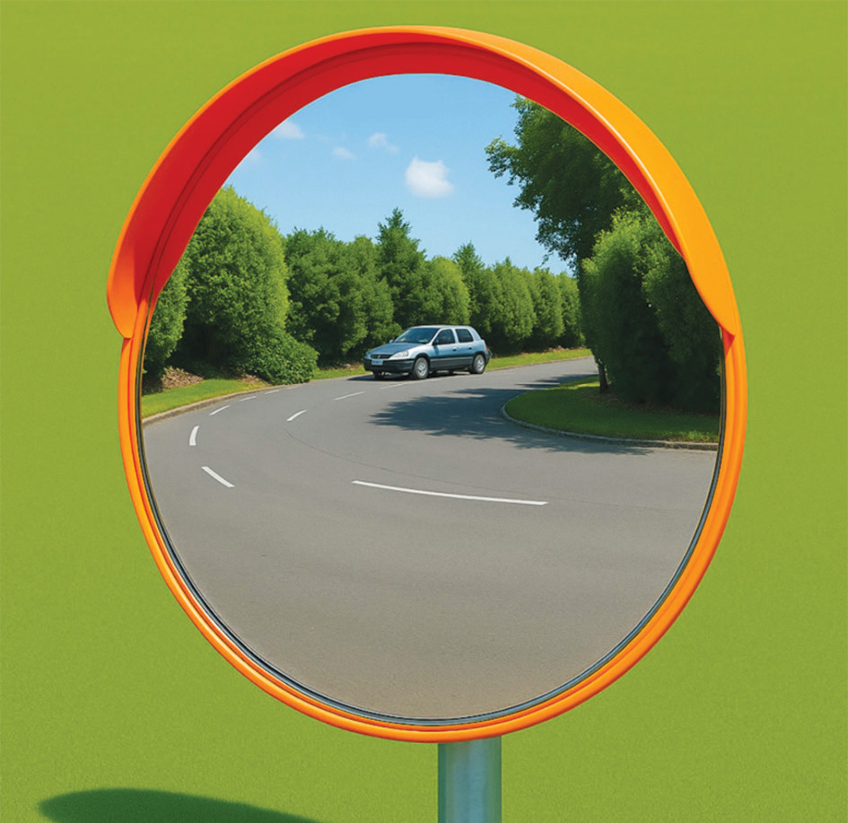

Uses of curved mirrors
Curved mirrors have various applications in our daily lives. Depending on the purpose, some applications utilise concave mirrors while others utilise convex mirrors.
Uses of convex mirrors
Convex mirrors provide a wide field of view compared to other mirrors, forming diminished images. Therefore, they are used when a broad field of view is preferred over the size of the image. The following are some applications of convex mirrors:
Convex mirrors are used as side mirrors for cars. This allows the driver to gain a wide angle rear view, as shown in Figure 4.33. However, these mirrors have the disadvantage of making objects appear farther away than they actually are. This occurs because the image is always formed between the mirror and the focal point of the mirror, regardless of the object’s distance. Hence, images appear small, and the brain interprets smaller images as farther away.

Reflecting light in streetlights: A convex mirror is a reflector in street lamps. Due to the wide view offered by the diverging mirror, light from the lamp spreads over a larger area. Figure 4.34 illustrates light diverging from the streetlights.

Seeing around corners: Convex mirrors are placed at road junctions and the corners of places like parking lots and supermarkets. This enables people to see around the corners to avoid collisions between vehicles or supermarket trolleys. Figure 4.35 shows a convex mirror used as a safety mirror at a road junction.
